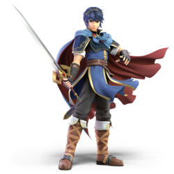

0001. Marth

Marth is the main character of 4 different Fire Emblem games, and has appeared in the Smash Brothers series since Melee. His signature ability, his tipper and shield breaker, are likely references to his starting weapon in his games, a rapier, which is extra effective against armored units.
click here for a mockup of the spirit select area